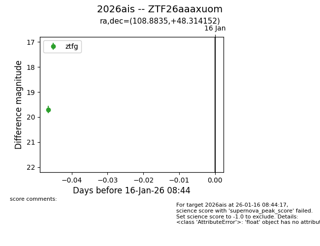
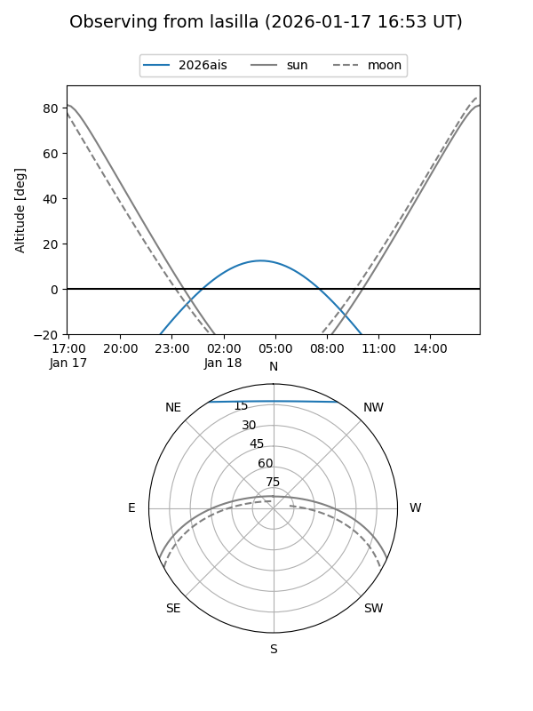
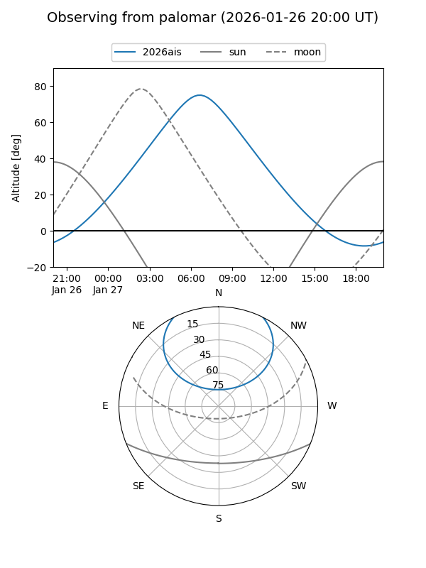
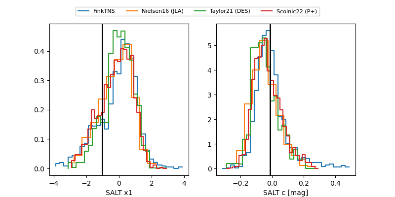

2026ais
Target 2026ais at 2026-01-25 08:56
Aliases and brokers:
FINK: link
Lasair: link
ALeRCE: link
TNS: link
YSE: link
alt names
ZTF26aaaxuom (ztf,fink_ztf)
2026ais (tns,yse)
Coordinates:
equatorial (ra, dec) = 108.8835,+48.31415
equatorial (HMS+DMS) = 07:15:32.04,+48:18:50.95
galactic (l, b) = (169.1958,+23.74365)
Flags:
Photometry:
last ztfg=19.27, ztfr=19.27
4 ztfg, 3 ztfr detections
Lightcurve

Visibility


Additional plots
